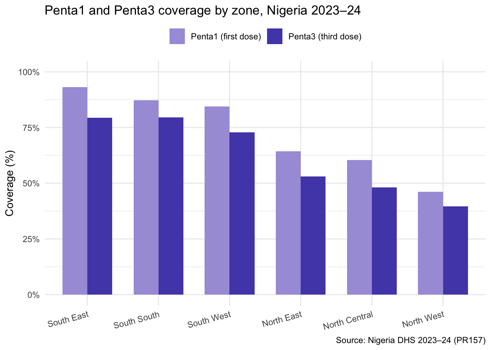
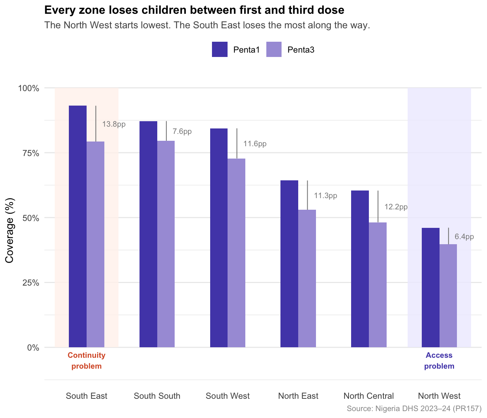
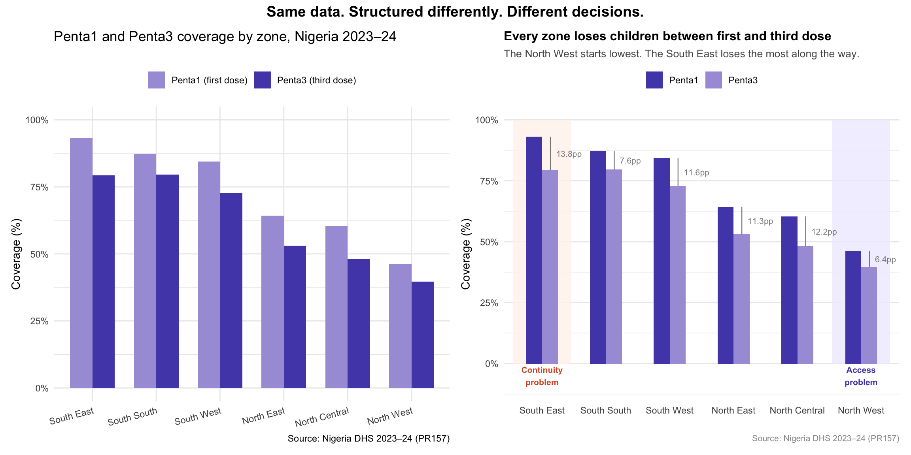

install.packages(c("ggplot2", "ggtext", "patchwork", "scales", "dplyr", "tidyr"))Tutorial #2: Structuring a Data Story for Policy Audiences
How to sequence your findings so policymakers reach the right conclusion before you say a word
data visualisation
R
policy
communication
beginners
The problem
Your analysis is solid. Your charts are clean. You walk into the room confident.
And then the policymaker asks: “So what does this mean for us?”
You have just spent thirty minutes presenting. They should know what it means. But they are asking because your presentation answered the wrong questions in the wrong order — and left the most important question unanswered entirely.
This tutorial is about fixing that. Not the chart. The structure around it.
What you will learn
By the end of this tutorial you will be able to:
- Explain why most data presentations fail to drive decisions
- Apply the What-So What-Now What framework to structure any policy presentation
- Use the Pyramid Principle to lead with your conclusion, not your methodology
- Humanise data so numbers connect to real decisions about real people
- Build a dumbbell chart in R to show vaccination dropout across zones
Prerequisites
Before starting, make sure you have completed Tutorial #1 or have the following packages installed:
Why structure matters more than data
Policymakers are not passive recipients of information. They are active filters — constantly scanning for what is relevant, what is urgent, and what requires a decision from them specifically.
Research on how policymakers engage with evidence shows three consistent patterns:
They are time-poor. A policymaker reviewing fifteen slides in a thirty-minute meeting has roughly two minutes per slide. They will not read every word. They will scan for the headline and move on.
They are not subject-matter experts. Handing a policymaker raw data or complex statistics without interpretation does not inform them — it burdens them. The interpretation is your job, not theirs.
They filter through a specific set of questions. Whether they articulate it or not, every policymaker sitting in a data presentation is asking three things: what are the facts, why does this matter to me, and what should I do about it?
Most analytical presentations answer the first question thoroughly, gesture vaguely at the second, and leave the third entirely to the audience.
That is not a data problem. It is a structure problem.
The data
We will use zonal Penta1 and Penta3 coverage data from the 2023–24 Nigeria Demographic and Health Survey (DHS), available at dhsprogram.com.
Penta1 is the first dose of the pentavalent vaccine. Penta3 is the third and final dose. The gap between them — the dropout — tells us how many children started vaccination but never completed it. This is one of the most actionable insights in immunisation programming because these children are not unreached — they are under-served.
# Load packages
library(ggplot2)
library(ggtext)
library(patchwork)
library(scales)
library(dplyr)
library(tidyr)
# Zonal Penta1 and Penta3 coverage from DHS 2023-24 (PR157)
zone_data <- data.frame(
zone = c(
"North Central", "North East", "North West",
"South East", "South South", "South West"
),
penta1 = c(60.4, 64.3, 46.1, 93.1, 87.2, 84.4),
penta3 = c(48.2, 53.0, 39.7, 79.3, 79.6, 72.8)
) %>%
mutate(
dropout = penta1 - penta3,
dropout_pct = round((dropout / penta1) * 100, 1)
)mutate() creates new columns. Here we calculate two things — the absolute dropout (the gap in percentage points between Penta1 and Penta3) and the dropout rate (the proportion of children who started but did not finish, expressed as a percentage of those who started).
Inspect the data
Before building any chart, look at what the data is telling you.
zone_data zone penta1 penta3 dropout dropout_pct
1 North Central 60.4 48.2 12.2 20.2
2 North East 64.3 53.0 11.3 17.6
3 North West 46.1 39.7 6.4 13.9
4 South East 93.1 79.3 13.8 14.8
5 South South 87.2 79.6 7.6 8.7
6 South West 84.4 72.8 11.6 13.7Take a moment to read the dropout column carefully. Two patterns should immediately stand out:
The North West has the lowest Penta1 coverage nationally — meaning children are not even entering the vaccination system. This is an access problem.
The South East has the highest absolute dropout despite the strongest Penta1 coverage — meaning children are starting but not finishing. This is a continuity problem.
These are two different policy problems requiring two different interventions. A chart that shows only Penta3 would hide this distinction entirely.
Framework 1 — What? So What? Now What?
This is the simplest and most powerful framework for structuring any policy presentation. It maps directly onto the three questions every policymaker is asking.
What? — Clearly describe the facts. This is the evidence layer.
So What? — Explain the implications. Why does this matter? This is the interpretation layer.
Now What? — Provide a clear, actionable recommendation. This is the decision layer.
Let us build a chart for each layer using the same data.
What? — The evidence
# Reshape to long format for grouped bar chart
zone_long <- zone_data %>%
pivot_longer(
cols = c(penta1, penta3),
names_to = "dose",
values_to = "coverage"
) %>%
mutate(
dose = case_when(
dose == "penta1" ~ "Penta1 (first dose)",
dose == "penta3" ~ "Penta3 (third dose)"
)
)
# What chart — shows the pattern without interpretation
chart_what <- ggplot(
zone_long,
aes(
x = reorder(zone, -coverage),
y = coverage,
fill = dose
)
) +
geom_col(position = "dodge", width = 0.7) +
scale_fill_manual(
values = c(
"Penta1 (first dose)" = "#A89EDB",
"Penta3 (third dose)" = "#534AB7"
)
) +
scale_y_continuous(
labels = label_percent(scale = 1),
limits = c(0, 100)
) +
labs(
title = "Penta1 and Penta3 coverage by zone, Nigeria 2023–24",
x = NULL,
y = "Coverage (%)",
fill = NULL,
caption = "Source: Nigeria DHS 2023–24 (PR157)"
) +
theme_minimal(base_size = 11) +
theme(
legend.position = "top",
axis.text.x = element_text(angle = 15, hjust = 1)
)
chart_what
This chart answers What. It shows Penta1 and Penta3 coverage side by side. But it forces the reader to mentally calculate the gap between the two bars — exactly the kind of cognitive work we should be doing for them.
So What? — The interpretation
A grouped bar chart asks the reader to calculate the dropout. A dumbbell chart shows it directly — the orange dot is where children end up (Penta3), the purple dot is where they started (Penta1), and the line between them is the gap. The reader sees the argument before reading a single word.
# Prepare data with highlight flags
zone_plot <- zone_data %>%
mutate(
highlight = zone %in% c("North West", "South East"),
problem = case_when(
zone == "North West" ~ "Access problem",
zone == "South East" ~ "Continuity problem",
TRUE ~ ""
)
) %>%
pivot_longer(
cols = c(penta1, penta3),
names_to = "dose",
values_to = "coverage"
) %>%
mutate(
dose = case_when(
dose == "penta1" ~ "Penta1",
dose == "penta3" ~ "Penta3"
),
dose = factor(dose, levels = c("Penta1", "Penta3"))
)
# Zone order — by Penta1 descending
zone_order <- zone_data %>%
arrange(desc(penta1)) %>%
pull(zone)
zone_plot <- zone_plot %>%
mutate(zone = factor(zone, levels = zone_order))
# Zone positions for rectangles (zones are 1-6 on x axis)
nw_pos <- which(zone_order == "North West")
se_pos <- which(zone_order == "South East")
# Build chart
chart_sowhat <- ggplot(
zone_plot,
aes(
x = zone,
y = coverage,
fill = dose
)
) +
# Highlight rectangles — drawn first so bars sit on top
annotate(
geom = "rect",
xmin = se_pos - 0.45,
xmax = se_pos + 0.45,
ymin = 0,
ymax = 100,
fill = "#FFF3EE",
alpha = 0.8
) +
annotate(
geom = "rect",
xmin = nw_pos - 0.45,
xmax = nw_pos + 0.45,
ymin = 0,
ymax = 100,
fill = "#EEEDFE",
alpha = 0.8
) +
# Bars — touching within each zone
geom_col(
position = position_dodge(width = 0.5),
width = 0.5
) +
# Dropout bracket annotations
geom_segment(
data = zone_data %>%
mutate(zone = factor(zone, levels = zone_order)),
aes(
x = as.numeric(zone) + 0.13,
xend = as.numeric(zone) + 0.13,
y = penta3,
yend = penta1
),
inherit.aes = FALSE,
colour = "#888888",
linewidth = 0.4
) +
geom_text(
data = zone_data %>%
mutate(zone = factor(zone, levels = zone_order)),
aes(
x = as.numeric(zone) + 0.22,
y = (penta1 + penta3) / 2,
label = paste0(round(dropout, 1), "pp")
),
inherit.aes = FALSE,
size = 2.8,
colour = "#888888",
hjust = 0
) +
# Problem labels below highlighted zones
annotate(
geom = "text",
x = se_pos,
y = -5,
label = "Continuity\nproblem",
colour = "#D85A30",
size = 2.8,
fontface = "bold",
hjust = 0.5
) +
annotate(
geom = "text",
x = nw_pos,
y = -5,
label = "Access\nproblem",
colour = "#534AB7",
size = 2.8,
fontface = "bold",
hjust = 0.5
) +
scale_fill_manual(
values = c(
"Penta1" = "#534AB7",
"Penta3" = "#A89EDB"
)
) +
scale_y_continuous(
labels = label_percent(scale = 1),
limits = c(-10, 100),
breaks = seq(0, 100, 25)
) +
labs(
title = "**Every zone loses children between first and third dose**",
subtitle = "The North West starts lowest. The South East loses the most along the way.",
x = NULL,
y = "Coverage (%)",
fill = NULL,
caption = "Source: Nigeria DHS 2023–24 (PR157)"
) +
theme_minimal(base_size = 11) +
theme(
legend.position = "top",
plot.title = element_markdown(size = 12, lineheight = 1.3),
plot.subtitle = element_text(size = 10, colour = "#555555"),
plot.caption = element_text(size = 8, colour = "#999999"),
panel.grid.major.x = element_blank()
)
chart_sowhat
Now the chart answers So What. The active title makes the argument. The dumbbell shows the dropout visually — no calculation required. The gap labels confirm what the eye already sees.
Notice two things:
- The North West has the shortest line — small absolute dropout — but starts so low that even a small gap matters enormously. This is an access problem.
- The South East has the longest line — the biggest absolute dropout — despite the strongest start. This is a continuity problem.
The same chart. Two completely different interventions.
Now What? — The recommendation
The Now What belongs in your spoken narrative, executive summary, or policy brief. Here is what it looks like for this data:
“The North West and North East require access interventions — outreach, demand generation, and community engagement to bring children into the immunisation system for the first time. The South East requires continuity interventions — defaulter tracing, reminder systems, and caregiver follow-up to bring children who have already started back to complete their series. A single national strategy will not address both problems equally.”
Notice what this recommendation does:
- It names the geographies specifically
- It names the mechanism for each — access vs continuity
- It makes a clear structural argument — one strategy will not work for both
- It gives the policymaker something to act on immediately
Framework 2 — The Pyramid Principle
The Pyramid Principle flips the traditional academic structure. Instead of building toward your conclusion through evidence, you lead with your conclusion and support it beneath.
Traditional academic structure: Context → Data → Analysis → Finding → Recommendation
Pyramid structure: Recommendation → Key findings → Supporting evidence
Applied to our data:
Top — the recommendation: “Design zone-specific interventions — access strategies for the north, continuity strategies for the south.”
Middle — key findings:
- Every zone loses children between Penta1 and Penta3
- The North West starts lowest at 46.1% Penta1 — an access problem
- The South East has the largest absolute dropout at 13.8 percentage points — a continuity problem
- No northern zone reaches the 80% Penta3 target
Base — supporting evidence: The full zonal breakdown, state-level data, trend analysis over time.
For a policymaker with two minutes per slide, only the top of the pyramid may get read. The Pyramid Principle ensures that if they read only one thing, they read the most important thing.
Framework 3 — Humanising the data
Numbers alone do not motivate action. Stories do.
Anchor your data with a human reality — name who is affected, what the consequence is, and what is preventable.
# Calculate humanised framings for each zone
zone_data %>%
mutate(
unvaccinated_per_100 = round(100 - penta3),
dropout_per_100 = round(dropout),
humanised = paste0(
zone, ": ", dropout_per_100,
" in every 100 children who started vaccination never completed it"
)
) %>%
select(zone, penta1, penta3, dropout_per_100, humanised) zone penta1 penta3 dropout_per_100
1 North Central 60.4 48.2 12
2 North East 64.3 53.0 11
3 North West 46.1 39.7 6
4 South East 93.1 79.3 14
5 South South 87.2 79.6 8
6 South West 84.4 72.8 12
humanised
1 North Central: 12 in every 100 children who started vaccination never completed it
2 North East: 11 in every 100 children who started vaccination never completed it
3 North West: 6 in every 100 children who started vaccination never completed it
4 South East: 14 in every 100 children who started vaccination never completed it
5 South South: 8 in every 100 children who started vaccination never completed it
6 South West: 12 in every 100 children who started vaccination never completed itCompare these two framings of the South East finding:
Data only: “The South East has a Penta1 to Penta3 dropout of 13.8 percentage points.”
Humanised: “In the South East — Nigeria’s highest-performing region — nearly 1 in 7 children who received their first vaccine dose never completed the series. These children are not unreached. They are under-served. And because they are already in the system, they are findable.”
The second framing names the children, names the paradox, and names the opportunity. It gives the policymaker something to act on behalf of — not a percentage point, but a child who started and was lost.
Putting it all together
chart_what + chart_sowhat +
plot_annotation(
title = "Same data. Structured differently. Different decisions.",
theme = theme(
plot.title = element_text(size = 14, face = "bold", hjust = 0.5)
)
) +
plot_layout(widths = c(1, 1))
The left panel shows the data. The right panel makes the argument. The reader should spend ten seconds on the left and the rest of their time on the right.
A checklist before you present
Before your next policy presentation run through these five questions:
1. Have I answered What, So What, and Now What? If any layer is missing your presentation is incomplete.
2. Does my opening statement lead with the conclusion? If you are building toward your finding you have lost half the room before you get there.
3. Have I distinguished between different types of problems in the data? The same indicator can reflect different problems in different geographies. Name them separately.
4. Is my recommendation specific enough to act on? “Strengthen immunisation systems” is not a recommendation. “Design defaulter tracing systems in South East zones with Penta1 above 80% and dropout above 10%” is.
5. If they read only the title of each chart — have I said enough? Return to Tutorial #1 if the answer is no.
Your turn
Using your own data, apply the What-So What-Now What framework:
- Build a What chart — descriptive, shows the pattern
- Build a So What chart — active title, names the implication
- Write the Now What in one paragraph — specific, actionable, time-bound
Share your before and after in the comments.
Further resources
- The Pyramid Principle — Barbara Minto
- Storytelling with Data — Cole Nussbaumer Knaflic
- 2023–24 Nigeria DHS Key Indicators Report
Next tutorial
Tutorial #3: Bar, line, map, or table? Choosing the right chart type for policy data in R
Publishing Wednesday 9 April 2026.